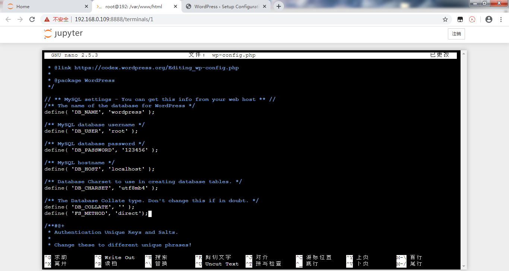
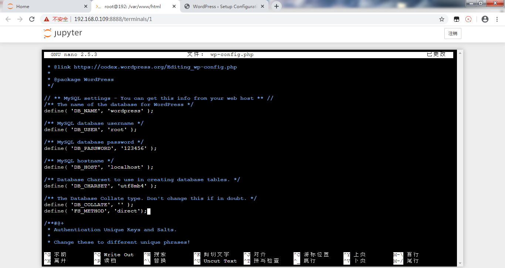
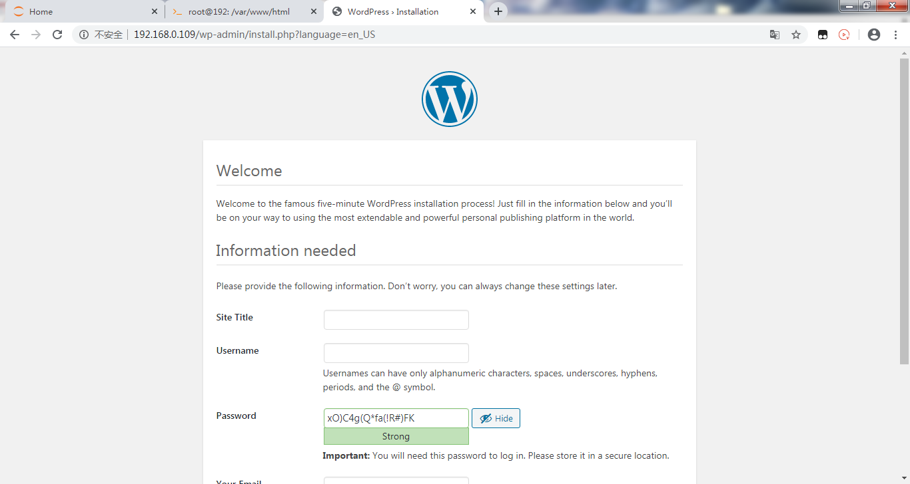
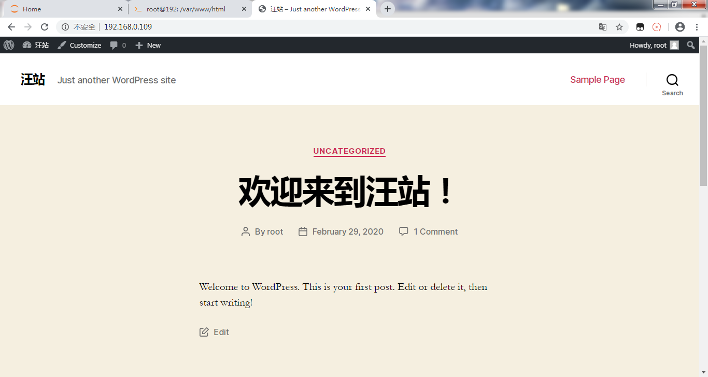
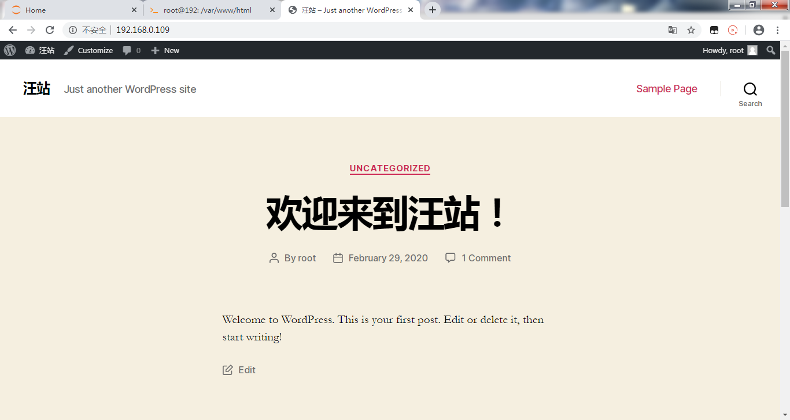

6. 搭建LNMP和WordPress¶
在虚谷号上可以搭建一个Web服务器，运行类似WordPress的Web服务。
6.1. LNMP和WordPress简介¶
LNMP是指一组通常一起使用来运行动态网站或者服务器的自由软件名称首字母缩写。L指Linux，N指Nginx，M一般指MySQL，也可以指MariaDB，P一般指PHP。
WordPress是使用PHP语言开发的博客平台，用户可以在支持PHP和MySQL数据库的服务器上架设属于自己的网站。也可以把 WordPress当作一个内容管理系统（CMS）来使用。WordPress是一款个人博客系统，并逐步演化成一款内容管理系统软件，它是使用PHP语言和MySQL数据库开发的，用户可以在支持 PHP 和 MySQL数据库的服务器上使用自己的博客。
6.2. LNMP的安装¶
1、虚谷号切换成无线模式，通过浏览器访问jupyter。

2、在jupyter端新建“终端”


3、安装Nginx
1）安装命令
root@localhost:~# sudo apt install nginx
（1）出现以下命令提示，请输入“y”，按回车：
root@localhost:~# sudo apt install nginx
正在读取软件包列表... 完成
正在分析软件包的依赖关系树
正在读取状态信息... 完成
将会同时安装下列软件：
nginx-common nginx-core
建议安装：
fcgiwrap nginx-doc
下列【新】软件包将被安装：
nginx nginx-common nginx-core
升级了 0 个软件包，新安装了 3 个软件包，要卸载 0 个软件包，有 370 个软件包未被升级。
需要下载 389 kB 的归档。
解压缩后会消耗 1,345 kB 的额外空间。
您希望继续执行吗？ [Y/n]
（2）若出现以下升级的命令提示，请使用相关命令进行升级：
E: 有几个软件包无法下载，要不运行 apt-get update 或者加上 --fix-missing 的选项再试试？
升级命令：
root@localhost:~# sudo apt-get update
2）Nginx 服务器目录
root@localhost:~# cd /var/www/html/
root@localhost:/var/www/html# ls
index.nginx-debian.html
root@localhost:/var/www/html#
3）验证Nginx服务器
打开浏览器，输入虚谷号IP地址，就会出现经典的Nginx页面。

4）Nginx操作命令补充：卸载命令
root@localhost:~# sudo apt --purge remove nginx
root@localhost:~# sudo apt --purge remove nginx-common
root@localhost:~# sudo apt --purge remove nginx-core
4、安装MariaDB
1）安装MariaDB命令
root@localhost:~# sudo apt-get install mariadb-server
2）查看版本
root@localhost:~# mysqld --version
mysqld Ver 10.0.38-MariaDB-0ubuntu0.16.04.1 for debian-linux-gnu on aarch64 (Ubuntu 16.04)
200227 11:14:57 [Note] mysqld (mysqld 10.0.38-MariaDB-0ubuntu0.16.04.1) starting as process 3132 ...
3）安全配置
root@localhost:~# sudo mysql_secure_installation
NOTE: RUNNING ALL PARTS OF THIS SCRIPT IS RECOMMENDED FOR ALL MariaDB
SERVERS IN PRODUCTION USE! PLEASE READ EACH STEP CAREFULLY!
In order to log into MariaDB to secure it, we'll need the current
password for the root user. If you've just installed MariaDB, and
you haven't set the root password yet, the password will be blank,
so you should just press enter here.
Enter current password for root (enter for none): #回车
OK, successfully used password, moving on...
Setting the root password ensures that nobody can log into the MariaDB
root user without the proper authorisation.
Set root password? [Y/n] y #输入y，进入密码设置
New password: #设置root用户密码，按回车确定
Re-enter new password: #重复输入设置的root用户密码，按回车确定
Password updated successfully!
Reloading privilege tables..
... Success!
By default, a MariaDB installation has an anonymous user, allowing anyone
to log into MariaDB without having to have a user account created for
them. This is intended only for testing, and to make the installation
go a bit smoother. You should remove them before moving into a
production environment.
Remove anonymous users? [Y/n] y #是否删除匿名用户
... Success!
Normally, root should only be allowed to connect from 'localhost'. This
ensures that someone cannot guess at the root password from the network.
Disallow root login remotely? [Y/n] n #是否禁止root用户远程登录
... skipping.
By default, MariaDB comes with a database named 'test' that anyone can
access. This is also intended only for testing, and should be removed
before moving into a production environment.
Remove test database and access to it? [Y/n] y #是否删除test数据库
- Dropping test database...
... Success!
- Removing privileges on test database...
... Success!
Reloading the privilege tables will ensure that all changes made so far
will take effect immediately.
Reload privilege tables now? [Y/n] y #是否重新加载权限表
... Success!
Cleaning up...
All done! If you've completed all of the above steps, your MariaDB
installation should now be secure.
Thanks for using MariaDB!
root@localhost:~#
4）设置MySQL
（1）登录MySQL
方法一：
root@localhost:~# sudo mysql -u root #用用户“root”登录MySQL
Welcome to the MariaDB monitor. Commands end with ; or \g.
Your MariaDB connection id is 49
Server version: 10.0.38-MariaDB-0ubuntu0.16.04.1 Ubuntu 16.04
Copyright (c) 2000, 2018, Oracle, MariaDB Corporation Ab and others.
Type 'help;' or '\h' for help. Type '\c' to clear the current input statement.
MariaDB [(none)]>
方法二：
root@localhost:~# sudo mysql -u root -p #用用户“root”和密码登录，“-u”后跟用户名，“-p”后跟用户密码
Enter password: #输入root用户的密码，按回车确认
Welcome to the MariaDB monitor. Commands end with ; or \g.
Your MariaDB connection id is 50
Server version: 10.0.38-MariaDB-0ubuntu0.16.04.1 Ubuntu 16.04
Copyright (c) 2000, 2018, Oracle, MariaDB Corporation Ab and others.
Type 'help;' or '\h' for help. Type '\c' to clear the current input statement.
MariaDB [(none)]>
（2）设置MySQL
查看 mysql 数据库:
MariaDB [(none)]> select user,authentication_string,plugin from mysql.user;#查看 mysql 数据库下的 user、authentication_string、plugin
+------+-----------------------+-------------+
| user | authentication_string | plugin |
+------+-----------------------+-------------+
| root | | unix_socket |
+------+-----------------------+-------------+
1 row in set (0.00 sec)
MariaDB [(none)]>
设置mysql数据库
MariaDB [(none)]> select user,authentication_string,plugin from mysql.user; #在mysql用户表中查询：user,authentication_string,plugin
+------+-----------------------+-----------------------+
| user | authentication_string | plugin |
+------+-----------------------+-----------------------+
| root | | mysql_native_password |
+------+-----------------------+-----------------------+
1 row in set (0.00 sec)
MariaDB [(none)]> show databases; #列出现有的数据库
+--------------------+
| Database |
+--------------------+
| information_schema |
| mysql |
| performance_schema |
+--------------------+
3 rows in set (0.00 sec)
MariaDB [(none)]> use mysql; #使用数据库mysql
Reading table information for completion of table and column names
You can turn off this feature to get a quicker startup with -A
Database changed
MariaDB [mysql]> update user set plugin="mysql_native_password" where user="root";# 设置root用户的plugin 为 mysql_native_password，便于后续使用 root 来远程登录 WordPress 数据库
Query OK, 0 rows affected (0.00 sec)
Rows matched: 1 Changed: 0 Warnings: 0
MariaDB [mysql]> flush privileges; #刷新权限
Query OK, 0 rows affected (0.00 sec)
MariaDB [mysql]> select user,plugin from mysql.user; #在mysql数据的user表中查询：user,plugin
+------+-----------------------+
| user | plugin |
+------+-----------------------+
| root | mysql_native_password |
+------+-----------------------+
1 row in set (0.00 sec)
MariaDB [mysql]> exit #退出
Bye
root@localhost:~#
5、安装 PHP
1）安装命令：
root@localhost:~# sudo apt install php-fpm php-mysql #安装php-fpm、php-mysql,即能直接装好php,注意到版本是 7.0
2)查询版本
root@localhost:~# php --version #php版本查询命令
PHP 7.0.33-0ubuntu0.16.04.12 (cli) ( NTS )
Copyright (c) 1997-2017 The PHP Group
Zend Engine v3.0.0, Copyright (c) 1998-2017 Zend Technologies
with Zend OPcache v7.0.33-0ubuntu0.16.04.12, Copyright (c) 1999-2017, by Zend Technologies
3）配置php文件
关于PHP文件的配置，推荐远程桌面在虚谷号的命令提示中操作，谷歌浏览器和火狐浏览器的快捷命令“Ctrl+W”是关闭标签，与nano及vim命令操作有重复，需注意。
（1）安装nano库
root@localhost:~# sudo apt install nano
(2)配置php文件
root@localhost:~# sudo nano /etc/php/7.0/fpm/php.ini
'''
搜索 cgi.fix_pathinfo，可改可不改
原内容为：
;cgi.fix_pathinfo=1
改为：
cgi.fix_pathinfo=0
原来为1，允许网站其他用户上传图片；改为0，禁止。
注意要把开头的";"去掉
'''
cgi.fix_pathinfo=0 #修改后按指令提示保存、退出
4）配置Nginx文件
root@localhost:~# sudo vim /etc/nginx/sites-available/default #此处用到 vim 编辑器，便于后面截图显示，有高亮效果
原文件内容：

修改后内容：

更改内容说明：
'''
找到
# Add index.php to the list of you are using PHP
index index.html index.htm index.nginx-debian.html;
在列表中添加 index.php
'''
# Add index.php to the list of you are using PHP
index index.php index.html index.htm index.nginx-debian.html;
'''
修改 PHP scripts to FastCGI server 这部分的内容
'''
location ~ \.php$ {
include fastcgi_params;
fastcgi_pass unix:/run/php/php.3-fpm.sock;
fastcgi_index index.php;
fastcgi_param SCRIPT_FILENAME $document_root$fastcgi_script_name;
vim保存及退出命令
先按ESC键，从编辑模式退出，回到命令模式。
再用英文半角直接输入":wq"，回车即成功保存且退出了配置文件。
6、测试
1）对Nginx配置文件进行语法检查
root@localhost:~# sudo nginx -t
nginx: the configuration file /etc/nginx/nginx.conf syntax is ok
nginx: configuration file /etc/nginx/nginx.conf test is successful
root@localhost:~#
2)重新加载命令
root@localhost:~# sudo systemctl reload nginx
3）修改权限
root@localhost:~# sudo chmod 755 -R /var/www/
root@localhost:~# sudo chown -R scope /var/www/*
6.3. WordPress的安装¶
1、下载并解压
root@192:~# cd /var/www/html/ # 进入到 /var/www/html/ 文件夹下
root@192:/var/www/html# wget https://raw.githubusercontent.com/vvlink/vvBoard-app/master/latest.zip #提示 wordpress官网下载有限制，官网地址：https://wordpress.org/latest.zip
--2020-02-29 10:06:08-- https://raw.githubusercontent.com/vvlink/vvBoard-app/master/latest.zip
正在解析主机 raw.githubusercontent.com (raw.githubusercontent.com)... 151.101.108.133
正在连接 raw.githubusercontent.com (raw.githubusercontent.com)|151.101.108.133|:443... 已连接。
已发出 HTTP 请求，正在等待回应... 200 OK
长度： 13360988 (13M) [application/zip]
正在保存至: “latest.zip”
latest.zip 100%[============>] 12.74M 23.8KB/s in 10m 44s
2020-02-29 10:16:54 (20.3 KB/s) - 已保存 “latest.zip” [13360988/13360988])
root@192:/var/www/html# sudo unzip -q latest.zip # 解压
root@192:/var/www/html# sudo cp -r wordpress/* /var/www/html/ # 把解压后得到的 wordpress 文件夹内的所有文件，复制到 /var/www/html/ 文件夹下
root@192:/var/www/html# sudo rm -rf wordpress # 删除 wrodpress 文件夹
root@192:/var/www/html# sudo rm -rf latest.zip # 删除下载包
root@192:/var/www/html#
2、在MySQL中创建数据库
root@192:/var/www/html# mysql -u root -p #用root用户和密码登录数据库
Enter password:
Welcome to the MariaDB monitor. Commands end with ; or \g.
Your MariaDB connection id is 7
Server version: 10.0.38-MariaDB-0ubuntu0.16.04.1 Ubuntu 16.04
Copyright (c) 2000, 2018, Oracle, MariaDB Corporation Ab and others.
Type 'help;' or '\h' for help. Type '\c' to clear the current input statement.
MariaDB [(none)]> create database wordpress; #新建数据库文件“wordpress”
Query OK, 1 row affected (0.01 sec)
MariaDB [(none)]> show databases; #刷新数据库
+--------------------+
| Database |
+--------------------+
| information_schema |
| mysql |
| performance_schema |
| wordpress |
+--------------------+
4 rows in set (0.03 sec)
MariaDB [(none)]> exit #退出
Bye
root@192:/var/www/html#
3、安装WordPress
1）浏览器地址栏中，输入虚谷号IP地址

2）输入创建的数据库名称 wordpress、用户名 root、密码为设置的 root 密码，其他两项不改

3）根据提示在 /var/www/html 文件夹下创建 wp-config.php 文件，并考入页面的代码

 

4）拷入代码并添加： define( ‘FS_METHOD’, ‘direct’);
5）点击 Run the installation
6）创建标题，注册用户名和密码
7）安装完成

8）使用注册的用户名和密码进行登录
 

4、WordPress配置
1）配置上传权限问题
root@192:~# sudo chown -R www-data:www-data /var/www/html/
2）配置上传图片大小
修改PHP配置文件：
root@192:~# sudo nano /etc/php/7.0/fpm/php.ini
'''
修改下面两项内容的参数
post_max_size = 8M
upload_max_filesize = 2M
'''


重启PHP：
root@192:~# sudo systemctl restart php7.0-fpm.service